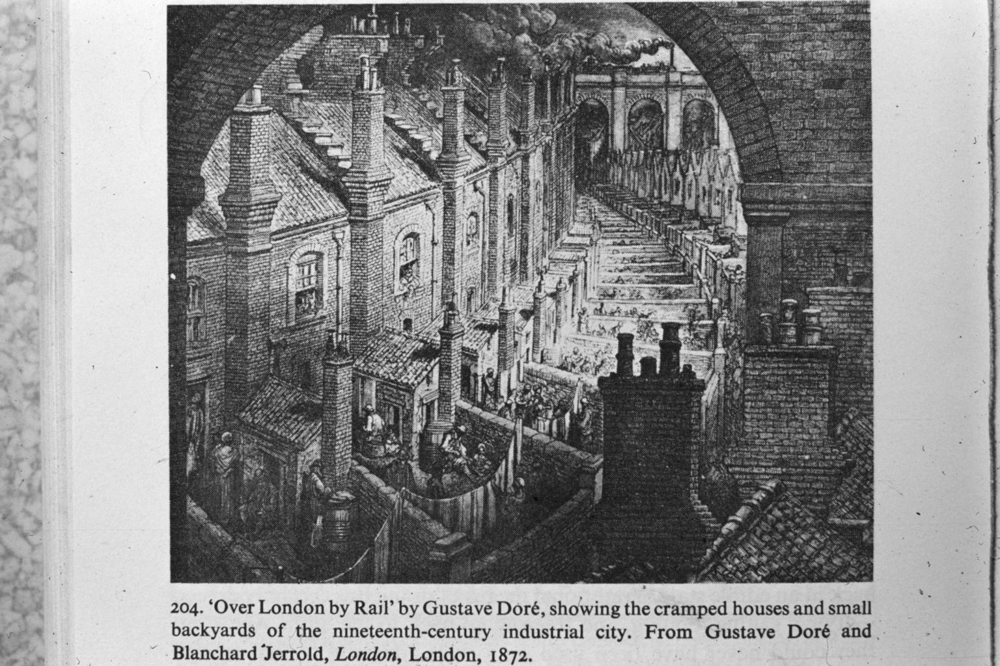
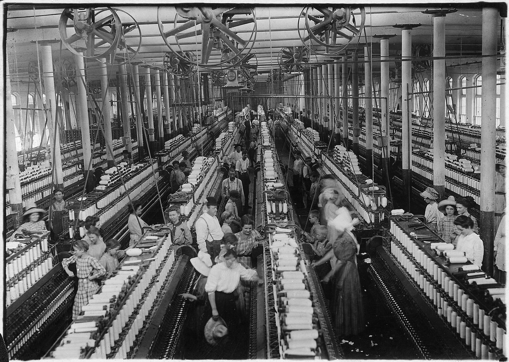
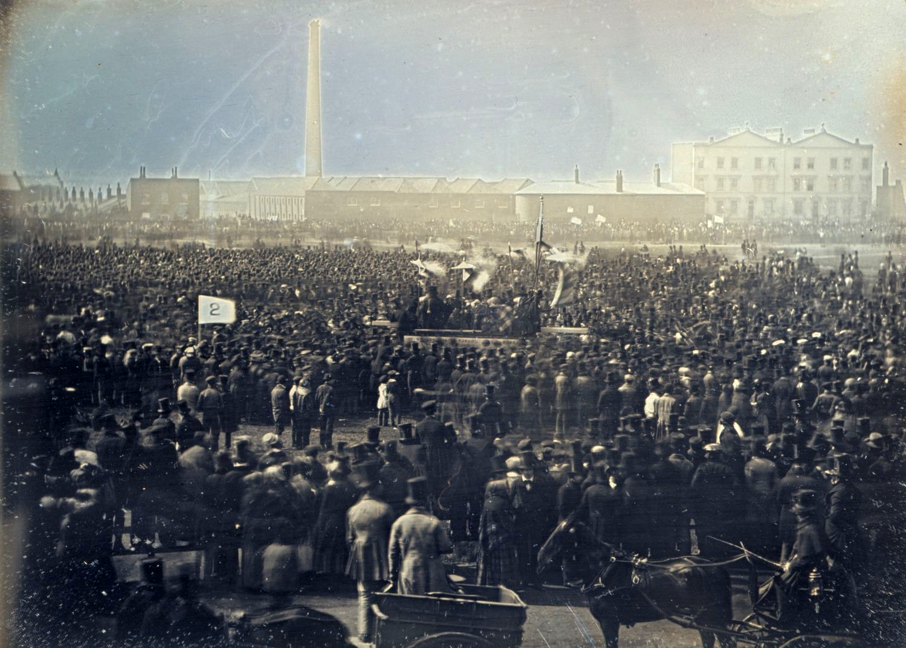

Überblick
Gesellschaft, Arbeit, Urbanisierung bezeichnet die soziale Dimension der ersten Industriellen Revolution in Großbritannien, vor allem vom frühen bis zur Mitte des 19. Jahrhunderts. Nach der technischen Hochphase von Dampf, Fabrik, Kohle und Eisen rückt hier in den Vordergrund, wie Fabriksystem, Bevölkerungsdruck und Eisenbahn Städte, Wohnverhältnisse, Familienökonomie und politische Konflikte umformten. Manchester, Birmingham, Leeds, Glasgow und die Hafen- und Hüttenorte wurden zu Symbolen einer neuen urbanen Industriegesellschaft: dicht besiedelt, von Rauch und Abwasser geprägt, ökonomisch dynamisch und sozial gespalten.
Der Wandel war weder rein Fortschritt noch reine Verelendung. Migration vom Land, längere und disziplinierte Fabrikarbeit, massenhafte Kinder- und Frauenbeschäftigung, Klassenbildung und Protestbewegungen (von Ludditen bis Chartisten) prägten den Alltag. Der Staat intervenierte zögerlich: Factory Acts, die New Poor Law von 1834, Bergwerksregelungen und lokale Gesundheitsmaßnahmen. Zeitgenossen wie Friedrich Engels und spätere Historiker stritten über Lebensstandard, Sterblichkeit und die Deutung der „industriellen Stadt“. Um die Jahrhundertmitte war Großbritannien städtisch und industriell führend; der nächste Schritt lag in der Ausbreitung nach Europa und in die USA.
Akteure
- Industriearbeiterinnen und -arbeiter, Handweber, Bergleute: Trugen Schichtarbeit, Lohnrisiko und Unfälle; bildeten den Kern neuer städtischer Unterschichten.
- Kinder und Jugendliche in Mühlen und Bergwerken: Billige Arbeitskräfte; Gegenstand parlamentarischer Untersuchungen und früher Fabrikgesetze.
- Frauen in Textilfabriken und Haushalten: Oft Doppelbelastung aus Lohnarbeit, Heimarbeit und Reproduktionsarbeit; zentrale, aber ungleich entlohnte Produzentinnen.
- Fabrikherren, Kaufleute und Mittelklasse: Unternehmer, Ärzte, Geistliche und Journalisten; teils Philanthropen und Reformer, teils Verteidiger des laissez-faire.
- Robert Owen (1771–1858): Unternehmer in New Lanark; verband Fabrikdisziplin mit Fürsorge, Bildung und genossenschaftlichen Ideen; Vorbild und Ausnahme zugleich.
- Anthony Ashley-Cooper, 7. Earl of Shaftesbury (1801–1885), und Michael Sadler (1780–1835): Parlamentarische Treiber der Factory Acts und der Ten-Hour-Bewegung.
- Edwin Chadwick (1800–1890): Verwaltungsreformer; Report on the Sanitary Condition of the Labouring Population (1842) verknüpfte Armut, Wohnungsnot und Krankheit und stieß Public-Health-Debatten an.
- Friedrich Engels (1820–1895): Beschrieb in Die Lage der arbeitenden Klasse in England (1845) Manchester und Umgebung aus eigener Beobachtung und zeitgenössischer Statistik; einflussreich und in der Forschung umstritten als Quelle und Deutung.
- Chartisten (ab ca. 1838): Massenbewegung für politisches Wahlrecht und parlamentarische Reform; Petitionen, Versammlungen, lokale Radikalisierung.
- Ludditen (bes. 1811–1816): Maschinenstürmer in Midlands und Lancashire; Protest gegen Lohnverfall und Verdrängung, nicht pauschal gegen „Technik an sich“.
- Parlament, Gemeindebehörden und Poor-Law-Verwaltungen: Setzten Factory Acts, New Poor Law und später Gesundheitsgesetze um; Durchsetzung blieb lange lückenhaft.
- Gewerkschaften, Friendly Societies und Kirchen: Organisierten Selbsthilfe, Sparvereine, Methodismus und politische Mobilisierung unterhalb und neben der staatlichen Ebene.
Was geschah
Urbanisierung und Wohnen

Die britische Bevölkerung wuchs stark; zugleich verdichtete sich die Siedlung in Industrie- und Hafenregionen. Manchester stand sinnbildlich für die Baumwollmetropole: rasches Wachstum, mehrstöckige Mühlen, enge Back-to-back-Häuser, Höfe ohne ausreichende Entwässerung, verschmutzte Flüsse und Rauch. Ähnliche Muster prägten Birmingham (Metall und Handwerk/Fabrik), Leeds und Bradford (Wolle), die Kohle- und Hüttenlandschaften von Südwales und dem Black Country sowie Glasgow und die Hafenstädte. Die Eisenbahn beschleunigte Zuzug und Güterverkehr und verstärkte die Konzentration.
Wohnraum folgte dem Kapital, nicht dem Bedarf. Vermieter verdichteten Parzellen; Kellerwohnungen, Überbelegung und fehlende Toiletten waren in Arbeitervierteln verbreitet. Trinkwasser und Abwasser vermischten sich; Choleraepidemien (u. a. 1831/32, 1848/49) und hohe Kindersterblichkeit machten die Krise sichtbar. Chadwicks Sanitary Report (1842) und lokale Ärzte dokumentierten den Zusammenhang von Wohnbedingungen und Krankheit. Gegenmaßnahmen (Kanalisation, Wasserwerke, Straßenreinigung) setzten erst allmählich und ungleichmäßig ein; das Public Health Act von 1848 markierte einen staatlichen Einstieg, ohne die Städte sofort zu „sanieren“. Urbanisierung bedeutete also Wachstum und Innovation, aber auch eine Krise der öffentlichen Infrastruktur, die den Zeitgenossen als moralisches und politisches Problem erschien.
Arbeit, Kinder, Frauen

Fabrik- und Bergwerksarbeit strukturierte den Tag neu: Glocken, Schichten, Aufsicht, Akkord und Maschinenrhythmus. In Baumwollspinnereien und später Webereien arbeiteten viele Frauen und Kinder; ihre Löhne lagen unter denen erwachsener Männer und waren Teil der Kostenkalkulation. Kinder putzten Maschinen, verbanden Fäden, schleppten Kohle oder öffneten Ventile in engen Stollen. Lange Tage (häufig zwölf Stunden und mehr), Lärm, Staub, Verletzungen und Disziplinarstrafen prägten den Erfahrungsraum. Handweber und andere Handwerksberufe erlebten Preisdruck durch Mechanisierung; ihre Krise wurde zum sozialen Symbol, ohne dass alle Gewerbe gleichzeitig fabrikisiert wurden.
Frauenarbeit war keine Ausnahme, sondern Normalfall der Textilindustrie und vieler städtischer Haushalte. Sie erweiterte das Familieneinkommen und band Frauen an den Lohnmarkt, ohne politische Gleichstellung oder gleichen Lohn. Zugleich blieb unbezahlte Haus- und Sorgearbeit zentral. Reformdiskurse thematisierten oft „Schutz“ von Frauen und Kindern und reproduzierten damit Geschlechterbilder, während Unternehmer Flexibilität und billige Arbeitskraft verteidigten. Die Forschung betont: Kinderarbeit existierte vor der Fabrik (Landwirtschaft, Heimgewerbe), aber die Fabrik machte sie sichtbarer, konzentrierter und politisch skandalisierbarer.
Klassen und Protest

Mit Fabrik, Stadt und Lohnabhängigkeit verdichteten sich Klassenlagen. Eine industrielle Arbeiterklasse entstand nicht über Nacht, sondern über Jahrzehnte aus Bergleuten, Fabrikarbeitern, Handwerkern und städtischen Armen. Parallel formierte sich eine selbstbewusste Mittelklasse aus Unternehmern, Kaufleuten und Professionen. Konflikte entzündeten sich an Löhnen, Maschinen, Lebensmittelpreisen und politischer Ausschließung.
Die Ludditen (vor allem 1811–1816) zerstörten gezielt bestimmte Maschinen in Strickerei und Tuchgewerbe; Motive waren Lohnsenkung, Qualitätsverlust und Verdrängung, eingebettet in Kriegszeit, Teuerung und schwache legale Interessenvertretung. Pauschale Deutungen als „Technikfeindlichkeit“ greifen zu kurz. Chartismus (ab etwa 1838) forderte unter anderem allgemeines Männerwahlrecht, geheime Wahl und Diäten für Abgeordnete; Millionen unterzeichneten Petitionen. Die Bewegung war regional unterschiedlich, mal moralisch-petitionistisch, mal konfrontativer; sie scheiterte kurzfristig an ihren Kernforderungen, prägte aber politische Kultur und Arbeiteridentität. Streiks, Food Riots früherer Jahrzehnte und lokale Unruhen gehörten ebenfalls zum Repertoire. Klasse war gelebte Erfahrung und politische Sprache zugleich, nicht nur ökonomische Kategorie.
Reformen und Staat
Staatliche Intervention blieb lange begrenzt und umkämpft. Frühe Factory Acts (Health and Morals of Apprentices Act 1802; Cotton Mills Act 1819) beschränkten teils Kinderarbeit, scheiterten aber an Durchsetzung. Der Factory Act 1833 (Textil) setzte Alters- und Stundengrenzen, Schulpflichtanteile und vor allem ein kleines Inspektorat; das war der qualitative Sprung, auch wenn Umgehung verbreitet blieb. Weitere Gesetze (u. a. 1844, Ten Hours Act 1847) dehnten Regelungen auf Frauen und Jugendliche aus; Bergwerksgesetze (u. a. 1842) schränkten Frauen- und Kinderarbeit unter Tage ein.
Die New Poor Law von 1834 zentralisierte Armenfürsorge, verschärfte das Workhouse-Prinzip und sollte „Outdoor Relief“ eindämmen. Sie war administrativ effizienter aus Sicht der Reformer, sozial oft brutal und in Industriegebieten hoch umstritten; Chartisten und Radikale attackierten sie als Klassenpolitik. Öffentliche Gesundheit, Impfungen, lokale Boards und später breitere Public-Health-Gesetze folgten dem Druck von Epidemien und Berichten. Insgesamt entstand kein Wohlfahrtsstaat, sondern ein lückenhaftes Regulierungsgefüge: der Staat akzeptierte allmählich, dass Arbeitszeit, Kinderschutz und städtische Hygiene nicht allein dem Markt überlassen werden konnten.
Alltag und Kultur
Alltag in Industriestädten war Lärm, Schichtwechsel, Sonntagsruhe, Kneipe, Kapelle und Straße. Methodismus und andere Kirchen boten Disziplin, Gemeinschaft und manchmal politische Sprache. Friendly Societies und frühe Gewerkschaften organisierten Krankheitshilfe und Sparsamkeit. Zeitung, Pamphlet und Petition politisierten die Unterschichten; Illustrierte und Enquêten machten Fabrik und Slum zum öffentlichen Bild. Konsum billiger Textilien und neuer Güter veränderte Kleidung und Haushalt, während Wohnungsnot und unsichere Löhne die Lebensplanung belasteten.
Kulturell verschoben sich Zeitbewusstsein (Uhr und Fabrikglocke), Geschlechterrollen und der Kontrast von „respektabler“ Mittelklasse und „gefährlichen“ Armenvierteln. Engels’ Manchester-Schilderung (1845) und Chadwicks Statistik formten das Bild der industriellen Stadt nachhaltig. Die Wirtschaftsgeschichte debattiert seither, ob Reallöhne und Ernährung langfristig stiegen (Optimisten) oder ob Verelendung, Ungleichheit und Gesundheitslasten die frühe Phase dominierten (Pessimisten). Regional, sektoral und nach Jahrzehnt fallen die Antworten unterschiedlich aus; sicher ist die qualitative Umwälzung von Arbeit, Wohnen und Politik.
Beginn
Als Beginn dieses Blocks gilt sinnvoll die Zeit, in der technische Industrialisierung und städtisches Massenwachstum sozial unübersehbar wurden: grob die Jahrzehnte nach 1800, mit Verdichtung in den 1820er bis 1840er Jahren. Voraussetzungen schufen die Vorbedingungen und die Hochphase von Dampf, Fabrik, Kohle und Eisen. Marksteine der sozialen Agenda waren parlamentarische Untersuchungen zur Kinderarbeit, der Factory Act 1833, die New Poor Law 1834, Chadwicks Sanitary Report 1842, Chartismus und Engels’ Lagebericht 1845. Der Übergang ist thematisch, nicht scharf chronologisch: Technik und Gesellschaft liefen parallel; hier steht die Gesellschaft im Zentrum.
Ende / Übergang
Um die Mitte des 19. Jahrhunderts waren Industriestadt, regulierte Fabrikarbeit und Arbeiterpolitik in Großbritannien etabliert, ohne dass Wohnungsnot, Klassenkonflikt oder Kinderarbeit verschwunden wären. Reformen hatten Prinzipien gesetzt (Inspektion, Stundengrenzen, Public Health), die später ausgeweitet wurden. Großbritannien blieb Modell und Warnbild zugleich. Der folgende Block Ausbreitung nach Europa und in die USA verschiebt den Blick: Wie wurden Dampf, Fabrik und Eisenbahn auf dem Kontinent und in Nordamerika übernommen, angepasst oder staatlich forciert? Sozial ähnelten sich Urbanisierung und Arbeiterfrage, aber Zeitpunkte, Institutionen und politische Antworten differierten. Damit geht die britisch zentrierte Gesellschaftsgeschichte der ersten Industriellen Revolution in die Geschichte ihrer internationalen Diffusion über.
Quellen
- Encyclopaedia Britannica – „Industrial Revolution“: https://www.britannica.com/event/Industrial-Revolution
- Encyclopaedia Britannica – „urbanization“: https://www.britannica.com/topic/urbanization
- Encyclopaedia Britannica – „Manchester“ (historical industrial context): https://www.britannica.com/place/Manchester-England
- Encyclopaedia Britannica – „Luddite“: https://www.britannica.com/event/Luddite
- Encyclopaedia Britannica – „Chartism“: https://www.britannica.com/event/Chartism
- Encyclopaedia Britannica – „Friedrich Engels“: https://www.britannica.com/biography/Friedrich-Engels
- Encyclopaedia Britannica – „Robert Owen“: https://www.britannica.com/biography/Robert-Owen
- Encyclopaedia Britannica – „Anthony Ashley Cooper, 7th Earl of Shaftesbury“: https://www.britannica.com/biography/Anthony-Ashley-Cooper-7th-earl-of-Shaftesbury
- Encyclopaedia Britannica – „Poor Law“: https://www.britannica.com/event/Poor-Law
- UK Parliament – The 1833 Factory Act (Living Heritage): https://www.parliament.uk/about/living-heritage/transformingsociety/livinglearning/19thcentury/overview/factoryact/
- UK Parliament – Early factory legislation: https://www.parliament.uk/about/living-heritage/transformingsociety/livinglearning/19thcentury/overview/earlyfactorylegislation/
- UK Parliament – Poor Law / 19th-century reform overview: https://www.parliament.uk/about/living-heritage/transformingsociety/livinglearning/19thcentury/overview/poorlaw/
- UK Parliament – Coal mines (Living Heritage): https://www.parliament.uk/about/living-heritage/transformingsociety/livinglearning/19thcentury/overview/coalmines/
- The National Archives (UK) – 1833 Factory Act context: https://www.nationalarchives.gov.uk/education/resources/1833-factory-act/
- Science and Industry Museum (Manchester) – Industrial Revolution stories: https://www.scienceandindustrymuseum.org.uk/objects-and-stories
- BBC History – Industrial Revolution / Victorian social conditions: https://www.bbc.co.uk/history/british/victorians/
- Encyclopaedia Britannica – „public health“ (historical developments): https://www.britannica.com/topic/public-health
- British Library – Working Class History / industrial Britain collections overview: https://www.bl.uk/
- Marxists Internet Archive – Engels, The Condition of the Working Class in England (text access): https://www.marxists.org/archive/marx/works/1845/condition-working-class/
- Cambridge / economic history – living standards debate (Allen and related literature): https://www.cambridge.org/core/books/british-industrial-revolution-in-global-perspective/29A277672CCD093D152846CE7ED82BD9